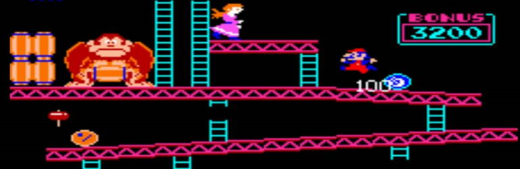
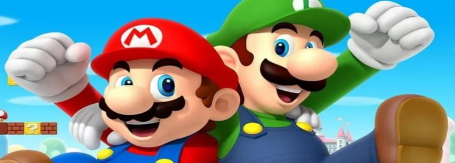

Start
Provavelmente todo mundo conhece e já jogou a história de Mario Bros, o famoso encanador que tenta salvar a namorada Pauline do gorila Donkey Kong. O que alguns podem não saber é que, no princípio, Mario nem mesmo era o personagem principal do jogo. Ele era conhecido com Jumpman e o jogo era só do Donkey Kong, Mario era só um participante. Toda essa história teve início em 1980.
O Personagem
Na intenção de deixar o personagem o mais próximo possível com um humano, Mario Bros ganhou o seu conhecidíssimo bigode. Primeiramente, Mario era carpinteiro. Entretanto, por passear dentro de canos em seu jogo, ele começou a ser visto como um encanador. Com o passar do tempo e com o sucesso do jogo, Mario Bros foi ganhando mais destaque. Ele ganhou o irmão Luigi, sua história se tornou mais elaborada e com objetivos, além de ter seus vilões mais trabalhados. Sem falar, é claro, os novos poderes fornecidos a ele a seus amigos.
É possível afirmar que o jogo do Mario é o principal da Nintendo. Podendo ser até mesmo um dos principais de todos os jogos eletrônicos. A franquia de Mario soma mais de 500 milhões de cópias vendidas. Enfim, um dos critérios que mais atraem o público é o fato dos jogos estarem disponíveis para todos os modelos da Nintendo.
Então é isso! Espero que você tenha gostado do meu artigo com essa curiosidade sobre o encanador mais famoso dos games. IAHUU ✌🏻